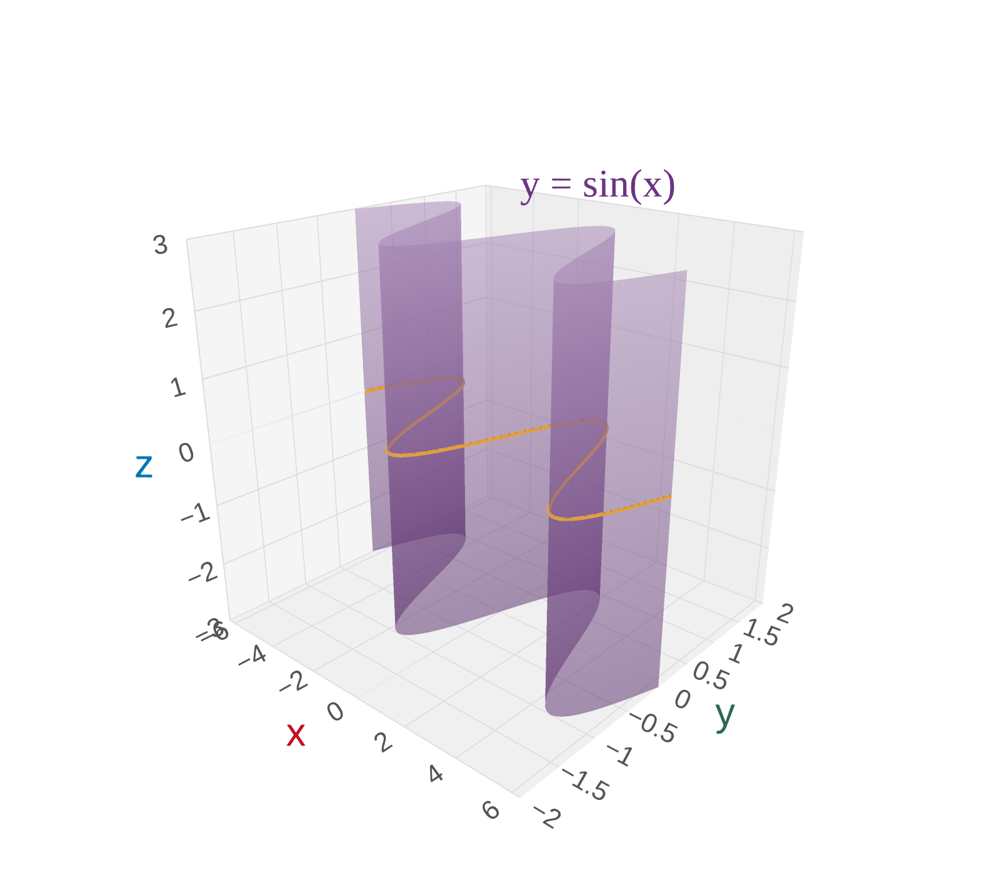
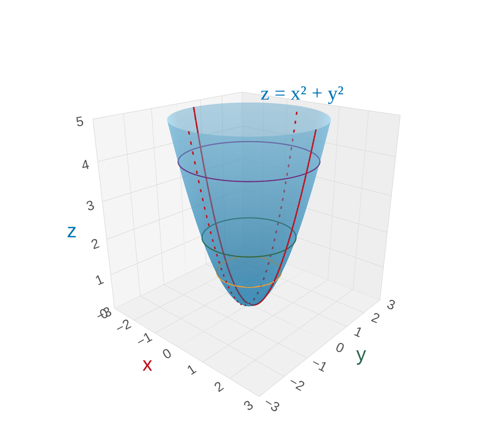
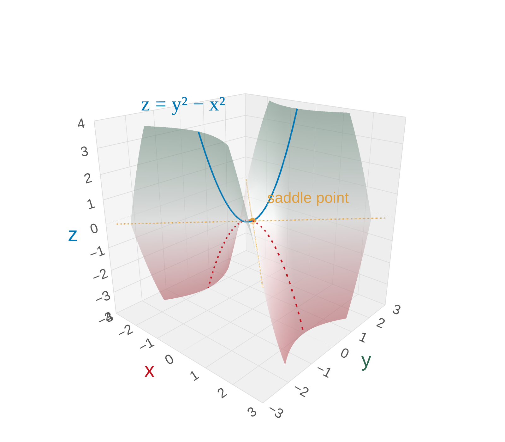
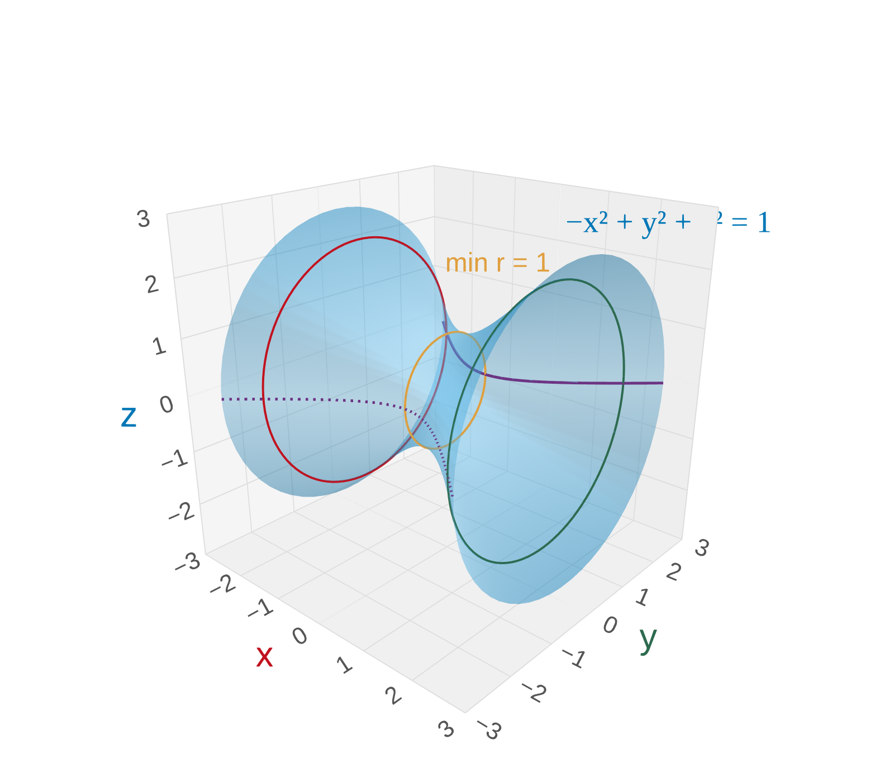
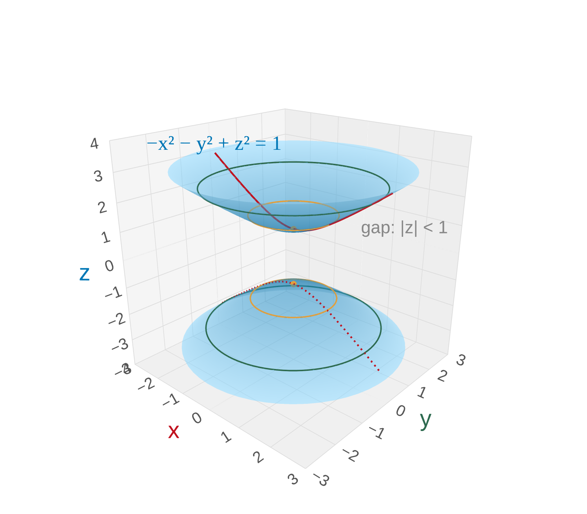
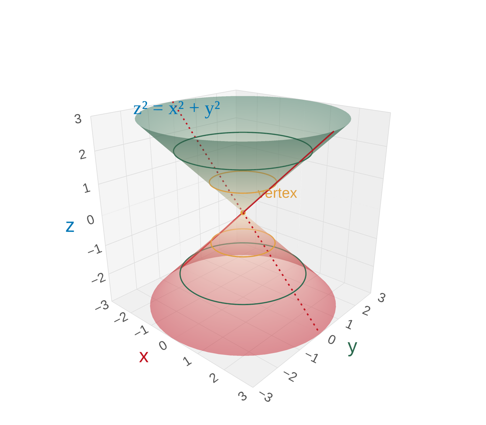

Section 12.6: Cylinders and Quadric Surfaces
Vectors and the Geometry of Space
MTH 310
Calculus III
Conic Sections Are Everywhere
A conic section is the curve you get by slicing a double cone with a plane.
Depending on the angle of the cut, you get one of four shapes:
- Circle — cut straight across (e.g. the rim of a coffee cup)
- Ellipse — cut at a slight tilt (e.g. planetary orbits)
- Parabola — cut parallel to the side of the cone (e.g. satellite dishes, headlight reflectors)
- Hyperbola — cut steep enough to hit both halves (e.g. cooling towers, sonic booms)
Classifying Conics by Their Equation
The general second-degree equation in two variables is:
If \(a\) and \(b\) are not both zero, this equation describes a conic section (possibly degenerate). We classify by comparing the squared terms:
| Squared terms | Shape |
|---|---|
| Only \(x^2\) or only \(y^2\) | Parabola |
| Both, same sign (\(ab > 0\)) | Circle (\(a = b\)) or Ellipse (\(a \neq b\)) |
| Both, opposite signs (\(ab < 0\)) | Hyperbola |
Standard Forms of Conics
Definition 1: Standard Forms
- Circle: \((x-h)^2 + (y-k)^2 = r^2\)
- Ellipse: \(\frac{(x-h)^2}{a^2} + \frac{(y-k)^2}{b^2} = 1\)
- Hyperbola (horizontal): \(\frac{(x-h)^2}{a^2} - \frac{(y-k)^2}{b^2} = 1\)
- Hyperbola (vertical): \(-\frac{(x-h)^2}{a^2} + \frac{(y-k)^2}{b^2} = 1\)
We get these by completing the square on the general equation. The center is at \((h, k)\).
Example 1: Sketch \(y^2 - 9x^2 = 1\)
Step 1 — Which way does it open? Compare signs of the squared terms: \(+y^2\) and \(-x^2\). The positive variable (\(y\)) wins → opens up and down.
Step 2 — Find intercepts. Zero out one variable at a time:
- Set \(x = 0\): \(y^2 = 1\) → \(y = \pm 1\) ✓
- Set \(y = 0\): \(-9x^2 = 1\) → no real solution ✗
Step 3 — Find asymptotes. For large values, the constant \(1\) is negligible: \(y^2 \approx 9x^2\) → \(y \approx \pm 3x\)
Example 2: Sketch \(x^2 - 4y^2 = 1\)
Step 1 — Which way does it open? Compare signs: \(+x^2\) and \(-y^2\). The positive variable (\(x\)) wins → opens left and right.
Step 2 — Find intercepts. Zero out one variable at a time:
- Set \(y = 0\): \(x^2 = 1\) → \(x = \pm 1\) ✓
- Set \(x = 0\): \(-4y^2 = 1\) → no real solution ✗
Step 3 — Find asymptotes. For large values, the constant \(1\) is negligible: \(x^2 \approx 4y^2\) → \(y \approx \pm \tfrac{1}{2}x\)
Example 3: Identify \(x^2 - 4y^2 + 4x + 24y = 33\)
Step 1 — Group by variable and factor. \((x^2 + 4x) - 4(y^2 - 6y) = 33\)
Step 2 — Complete the square. \((x^2 + 4x + 4) - 4(y^2 - 6y + 9) = 33 + 4 - 36\)
Step 3 — Simplify. \((x + 2)^2 - 4(y - 3)^2 = 1\)
Step 4 — Standard form. \(\frac{(x+2)^2}{1} - \frac{(y-3)^2}{(1/2)^2} = 1\) — Hyperbola centered at \((-2, 3)\), opening left and right.
Cylinders in 3D
Definition 2: Cylinder
A cylinder is a surface formed by taking a 2D curve and extending it along the missing coordinate axis.
If one variable is absent from the equation, the graph is a cylinder that extends infinitely along that axis.
\(z = x^2\) — missing \(y\), so it extends along the \(y\)-axis: parabolic cylinder

\(x^2 + z^2 = 4\) — missing \(y\), so it extends along the \(y\)-axis: circular cylinder

\(y = \sin(x)\) — missing \(z\), so it extends along the \(z\)-axis: wave cylinder

Quadric Surfaces and Traces
Definition 3: Quadric Surface
A quadric surface is the 3D graph of a second-degree equation in \(x\), \(y\), and \(z\).
Definition 4: Trace
A trace is the cross-section you get by setting one variable equal to a constant.
- Horizontal trace (\(z = k\)): slice parallel to the \(xy\)-plane
- Vertical trace (\(x = k\) or \(y = k\)): slice parallel to a coordinate wall
Example 4: Identify \(x^2 + y^2 - z = 0\)
Rewrite as \(z = x^2 + y^2\). Now find traces:
Horizontal traces (\(z = k\)): \(x^2 + y^2 = k\)
- \(k > 0\): circle of radius \(\sqrt{k}\) — circles get larger as \(z\) increases
- \(k = 0\): just the origin
- \(k < 0\): empty (no surface below \(z = 0\))
Vertical traces (\(y = k\) or \(x = k\)): upward parabolas shifted up by \(k^2\)
We don't need every trace to sketch the surface. Pick the direction with the simplest shape — here the circles (\(z = k\)) — and imagine stacking them. Then one parabola in each vertical direction serves as a guide.

Example 5: Identify \(z = y^2 - x^2\)
Rewrite as \(-x^2 + y^2 - z = 0\). Now find traces:
Horizontal traces (\(z = k\)): \(-x^2 + y^2 = k\)
- \(k > 0\): hyperbola opening along \(y\)
- \(k = 0\): lines \(y = \pm x\) (degenerate)
- \(k < 0\): hyperbola opening along \(x\)
Vertical traces:
- \(x = 0\): \(z = y^2\) — upward parabola
- \(y = 0\): \(z = -x^2\) — downward parabola
Stack the hyperbolas (which rotate 90° as \(z\) crosses 0), then use the two parabolas as vertical guides — the surface curves up in \(y\) and down in \(x\).


Example 6: Identify \(-x^2 + y^2 + z^2 = 1\)
Find traces:
Simplest trace (\(x = k\)): \(y^2 + z^2 = 1 + k^2\) — circles of radius \(\sqrt{1 + k^2}\)
- Always \(\geq 1\), so circles exist for all \(k\) (no gaps!)
- Minimum radius \(1\) at \(x = 0\) (the "waist")
Vertical traces (\(z = 0\)): \(-x^2 + y^2 = 1\) — hyperbola opening along \(y\)
Stack the circles along the \(x\)-axis — they shrink to a minimum at \(x = 0\) and expand outward in both directions. The hyperbola in the \(xy\)-plane confirms the waist shape.

Example 7: Identify \(-x^2 - y^2 + z^2 = 1\)
Find traces:
Horizontal traces (\(z = k\)): \(x^2 + y^2 = k^2 - 1\)
- \(|k| > 1\): circle of radius \(\sqrt{k^2 - 1}\)
- \(|k| = 1\): just a point (the vertex of each sheet)
- \(|k| < 1\): empty — no surface in the gap!
Vertical trace (\(y = 0\)): \(-x^2 + z^2 = 1\) — hyperbola opening along \(z\)
Stack circles above \(z = 1\) and below \(z = -1\), expanding outward. The gap \(|z| < 1\) means we get two separate sheets. The hyperbola in the \(xz\)-plane serves as a vertical guide.

Example 8: Identify \(z^2 = x^2 + y^2\)
Find traces:
Horizontal traces (\(z = k\)): \(x^2 + y^2 = k^2\)
- \(k \neq 0\): circle of radius \(|k|\)
- \(k = 0\): just the origin (the vertex)
Vertical trace (\(y = 0\)): \(z^2 = x^2\) → \(z = \pm x\) — two lines through the origin
Stack circles that grow linearly with \(|z|\). Unlike the paraboloid (circles grow like \(\sqrt{z}\)), these grow at a constant rate — straight sides. The two lines confirm it: no curvature, just a cone.
